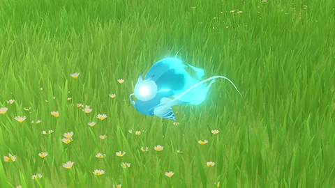

Teyvat & Unknown · Species & Creatures
Seelie
The Lord of the Night identifies Seelies as the devolved form of the ancient Angels, a race whose surviving lore describes wisdom, beauty, and service to humanity. Older books preserve additional Seelie legends, but some explicitly label those stories unreliable.

The game’s direct Angel connection
During the Natlan Archon Quest The Rainbow Destined to Burn, Yohualtecuhtin, the Lord of the Night, tells the Traveler that her ancient people were known as Angels and that Seelies are their devolved form. This is the clearest direct source for what Seelies are.
The disclosure links the tiny guiding spirits of present-day exploration to an ancient people. It does not, by itself, provide a full chronology of the Angels or explain every detail of how their later form developed.
What the old stories remember
In Aranyaka, Arama recalls Seelies as a great race with wisdom and beauty beyond the world, and says that they taught humans. His dialogue preserves the Aranara’s inherited memory; Yohualtecuhtin’s later testimony directly connects that ancient people to Angels.
The two sources work together without making every story literal. Arama recalls how the race was remembered, while the Lord of the Night identifies the relationship between Angels and Seelies.
The small guides encountered today
The Seelies met during exploration usually lead the Traveler toward a court or reward. Their visible forms differ across environments, including warm Seelies in Dragonspine, Electro Seelies in Inazuma, and luminous forms in the Chasm’s underground mines.
Those differences show regional variation in the present, but they do not prove that each type has a separate ancient origin. Natlan’s Monetoo can serve a similar navigation role without being called a Seelie by the game.
The Jueyun legend and its warning
Records of Jueyun, Volume IV tells a mountain-village story about a Seelie ancestor with a physical form, an oath with a traveler from afar, and witnesses called the three sisters of the Lunar Palace. The legend says disaster separated the pair and that the Seelie and sisters dwindled into the small spirits seen today.
The volume closes by calling its distant-past tales incredible and without credibility. Treat the account as a local tradition that can be compared with later moon lore, not as a confirmed biography of the Seelies or their ancestors.
Questions that remain open
The Angel connection is established, but the complete history of that race, the exact timing of devolution, and the circumstances behind every Seelie’s current state remain incomplete. Accounts of punishment, rebellion, or specific regional origins should be attributed to their own sources instead of merged into one settled timeline.
Likewise, a shared guiding function does not make Monetoo, Aranara, or other small spirits the same species. Use the Lord of the Night’s direct statement for the Angel relationship, Arama’s lines for older memories, and the Liyue book as folklore with its stated caveat.
This is an original CoreGG reading guide, not an official HoYoverse article or a reproduction of the game text. Source links below identify the records used so you can check the original context.
Sources & references
Check these sources for the original game text and reference trail.